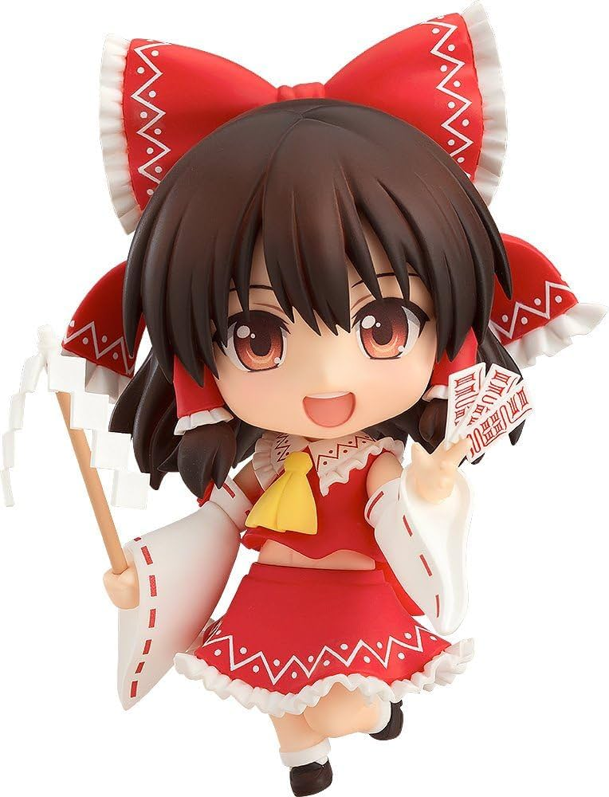

[Рейму Карурей ]
Рейму Хакурей (яп. 博麗 霊夢, система Поливанова: Хакурэй Рэйму) — одна из главных героинь серии «Touhou Project», участвующая почти в каждой игре этой серии. Являясь жрицей храма Хакурей, она отправляется на расследование странных происшествий в Генсокё. Поздравляю вы нашли пасхалку! так что иди обратно на главную страницу или разработчику сайта